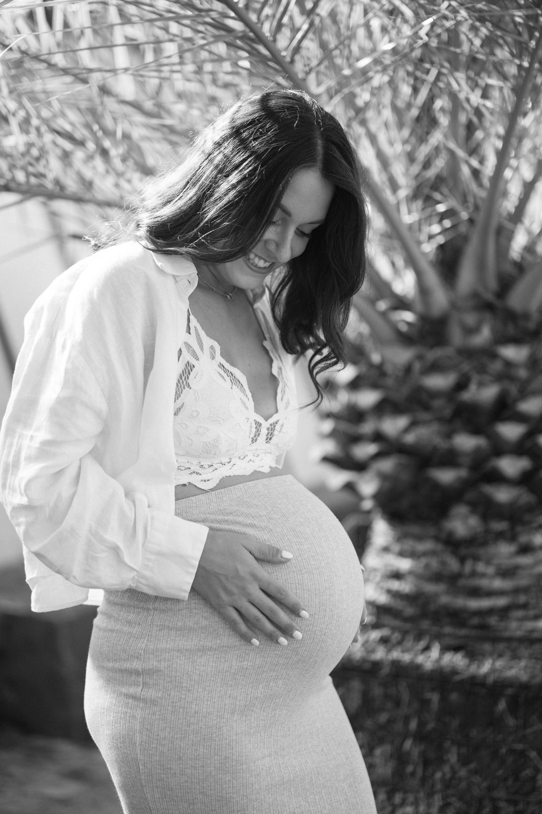
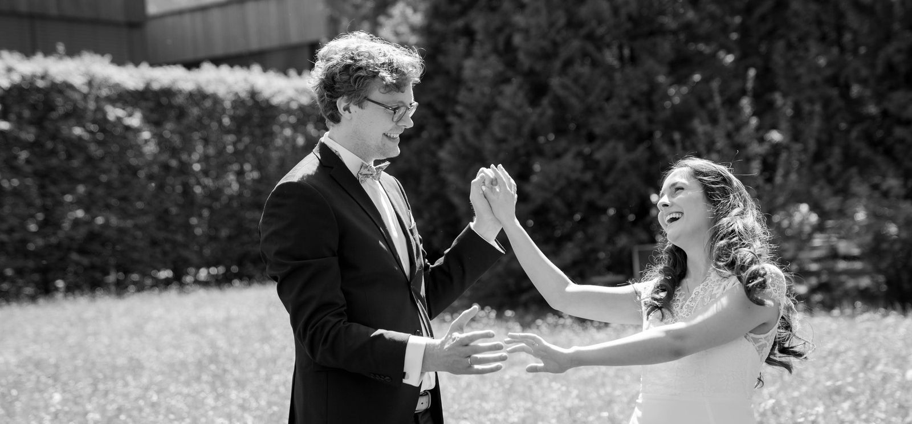
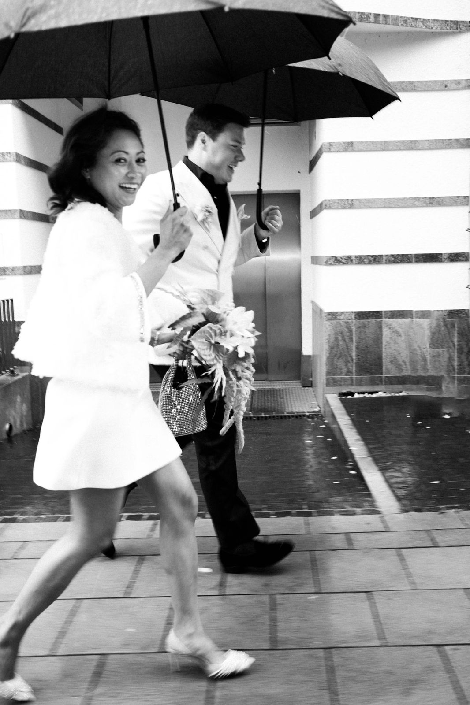
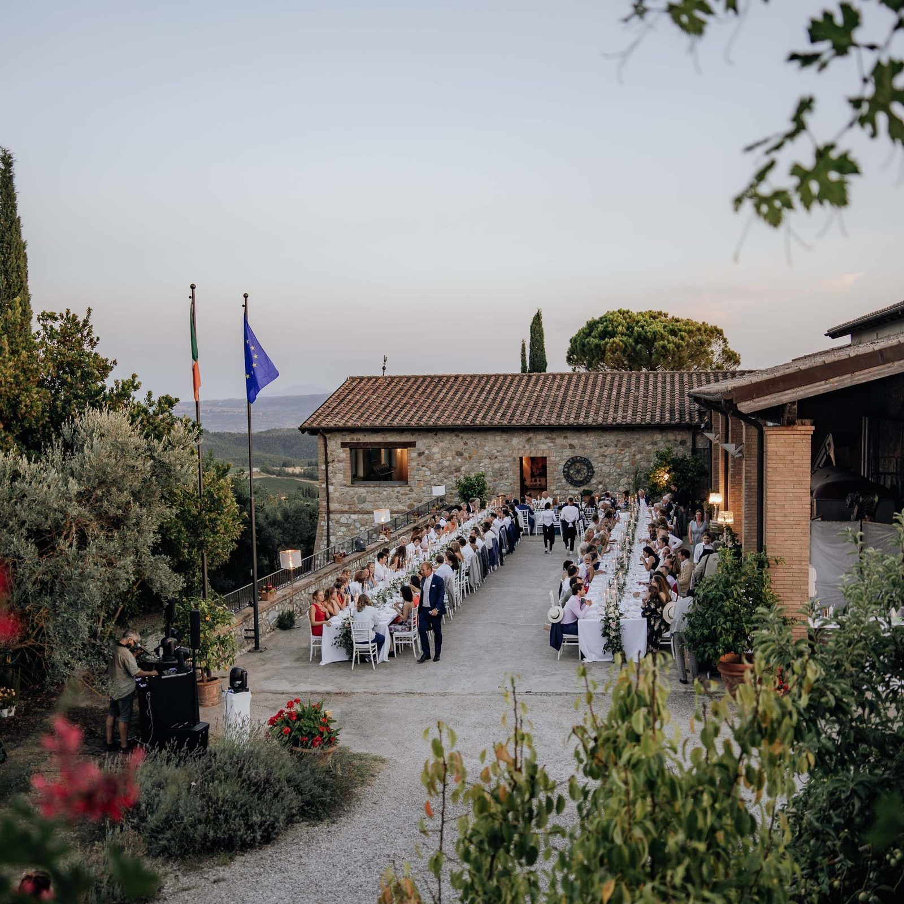
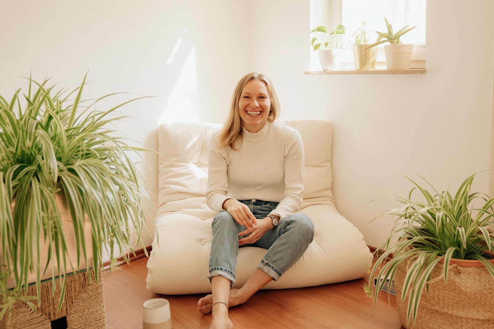
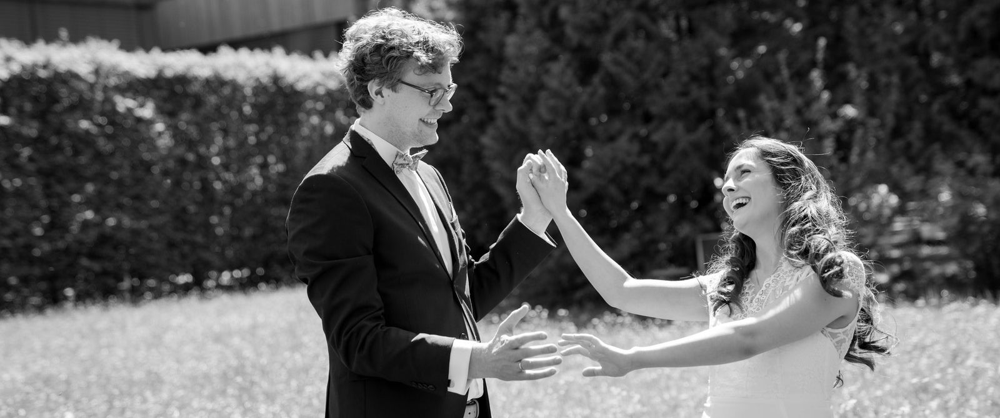

Preise · Hochzeitsfotografin München


INVESTMENT
You shine bright — I capture it.

Spontane Hochzeiten
Spontan Hochzeitsfotografie buchen? Ich bin dabei!
Ich bin auch spontan als Hochzeitsfotografin – ihr heiratet schon kommendes Wochenende? Oder ihr seid Familie oder Freunde und wollt mich als Überraschungsfotografin als Last-Minute-Geschenk dabei haben? Ruft mich einfach an, vielleicht bin ich an eurem Tag noch frei!
Hochzeit · Familie
01 · Hochzeit
750 €2 Stunden
jede weitere Stunde 250 €
Standesamt · freie · kirchliche Trauung & Destination weltweit
ca. 200–300 Fotos / 2 Std
Galerie in 30 Werktagen
Bundle Standesamt + freie oder kirchliche Trauung: −10 % auf die zweite Trauung

02 · Familie, Taufe & Geburtstag
220 €
ca. 45–60 Min
zu Hause oder outdoor an eurem Lieblingsort
20–30 bearbeitete Fotos
Galerie in 2 Wochen
03 · Babybauch & Newborn
je 220 €
ca. 45–60 Min
zu Hause oder outdoor an eurem Lieblingsort
20–30 bearbeitete Fotos
Galerie in 2 Wochen
Bundle Babybauch & Newborn: 400 €
04 · Paar & Verlobung
220 €
ca. 45–60 Min
zu Hause oder outdoor an eurem Lieblingsort
20–30 bearbeitete Fotos
Galerie in 2 Wochen
Business

05 · Personal Branding
ab 280 €ca. 1,5 Std
bis 2 Locations · innen & außen
zwei Outfits
inkl. CI-, Farb- & Stylingberatung
Galerie in 2 Wochen
06 · Firmen
ab 420 €
Branding Plus
Teams, Mitarbeiter & Headshots
Events auf Anfrage
Next Day Delivery: 120 €
Galerie in 2 Wochen
07 · Schauspielportraits
320 €
ca. 2 Stunden
Wir finden deine Charaktere
Rollenarbeit zum Reinfühlen
mehrere Outfits
zu Hause oder outdoor an deinem Lieblingsort
Galerie in 2 Wochen
08 · Business-Portraits
ab 100 €
ca. 20 Min
Outdoor · für LinkedIn, Website & Bewerbung
10 bearbeitete Fotos
Galerie in 1 Woche
Location: HP8 in München
Als Kleinunternehmerin gemäß § 19 UStG wird keine Umsatzsteuer berechnet. · Anfahrt im Raum München und Donau-Ries bis 20 km inklusive, darüber 0,50 €/km.
Häufige Fragen
HOCHZEIT
12 FragenWir stehen ganz am Anfang – wo fangen wir überhaupt an?
Ganz ehrlich? Vergesst erstmal alles, was ihr auf Pinterest gesehen habt. Setzt euch zusammen und fragt euch: Was fühlt sich wirklich nach UNS an? Nicht „das macht man so“. Und seid richtig frei in euren Vorstellungen – es gibt kein zu groß, zu klein, zu dies, zu das. Sicherlich wart ihr schon auf Hochzeiten und wisst, wie es „läuft“ – aber was davon seid wirklich ihr? Welcher Stil fühlt sich nach euch an? Bunt, knallig, orange und rot? Oder eher Salbei, Eukalyptus und zarte Töne? Oder etwas ganz anderes? Und was sind alte Träume, die vielleicht gar nicht mehr zu dem passen, was ihr heute seid? Sobald ihr diesen Kern habt, fragt euch: Was ist euch am wichtigsten? (Ich verrate es euch: Die Fotos, die genau dieses Gefühl festhalten! 😉) Der Rest – Location, Kleid, Deko – fügt sich dann ganz organisch Stück für Stück. Und wenn ihr mal den Wald vor lauter Bäumen nicht seht, helfe ich euch gerne, den Überblick zu behalten.
Wie früh sollten wir buchen?
Für die beliebten Samstage von Mai bis September empfehle ich etwa 6 Monate vorher – das gibt mir die Möglichkeit, mich wirklich auf euch einzustellen und den Tag perfekt zu planen. Aber ich bin natürlich auch gerne spontan dabei – ich bin die Fotografin für alle, die jetzt gerade feststellen, dass sie in vier Wochen heiraten, oder für Familien, die mich als Überraschungsgeschenk dazubuchen wollen. Schickt mir einfach eine Nachricht, sobald euer Termin halbwegs feststeht.
Wie läuft die Zusammenarbeit ab?
Wir lernen uns in einem lockeren Video-Call kennen. Natürlich erwarte ich nicht, dass ihr euch sofort entscheidet, aber wenn ihr euch ein paar Tage nach unserem Kennenlerncall für mich entscheidet, geht es mit dem Vertrag weiter. Dafür bitte ich euch um Anschrift, Namen und Locations. Etwa zwei Wochen vor der Hochzeit sprechen wir uns noch einmal per Video und gehen alle Feinheiten durch: Ablauf, Timing, Gruppenfotos, das beste Licht fürs Paarshooting und meine Tipps für einen entspannten Tag. Dazwischen bin ich jederzeit für eure Fragen da.
Wie viele Stunden sollen wir buchen?
Für Standesamt mit kleinem Paarshooting und kurzem Sektempfang reichen zwei bis drei Stunden, größere Feiern entsprechend mehr. Wir finden gemeinsam den Umfang, der zu eurem Tag passt – und wenn es vor Ort länger wird, können wir jederzeit spontan verlängern.
Wie viele Bilder bekommen wir – und wann?
Auf 2 Stunden Hochzeit kommen etwa 200–300 fertig bearbeitete Bilder. Die besten Momente, die echten Blicke, das ganze Gefühl. Einen ersten Sneak-Peek schicke ich euch schon innerhalb von 2 Wochen – damit ihr direkt was zum Teilen habt. Die komplette private Online-Galerie gibt's spätestens nach 30 Werktagen.
Wie würdest du deinen Stil beschreiben?
Dokumentarisch mit editorial Elementen. Die meisten Fotos entstehen wirklich ganz natürlich ohne Anleitung. Bei wenigen dirigiere ich aber schon etwas. Ihr bekommt zusätzlich Fotos in unterschiedlichen Stilen, mal Blitzfotografie für den glamour Look, mal verwackelt – schwarz/weiß und Farbe gemischt. Ich bin ein großer Fan davon, nicht einer Mode hinterherzurennen. Eine Zeit lang war beispielsweise jedes zweite Foto ein verwackeltes Schwarz-Weiß-Bild. Das gibt es bei mir nicht. Stattdessen bekommt ihr eine Auswahl in verschiedenen Stilen, und das ist klar: am Ende sind viele dabei, bei denen ihr selbst sagt: „Ja, DAS sind wir!“
Postest du unsere Bilder?
Im Vertrag werdet ihr gefragt, ob ich eure Fotos nutzen darf. Das hilft mir natürlich ungemein weiter, schließlich lebe ich davon, meine Arbeit zu zeigen. Grundsätzlich achte ich darauf, so wenige Gäste und Kinder wie möglich zu zeigen, außer ich habe die ausdrückliche Zustimmung. Wir können aber auch Kategorien ausschließen, beispielsweise möchten manche Paare nicht, dass Kussfotos gepostet werden, sind aber mit allem anderen einverstanden. Das besprechen wir individuell.
Was machen wir bei Regen?
Regen ist kein Spielverderber. Regenfotos können sogar richtig stimmungsvoll wirken. Durchsichtige Schirme halten das Gesicht hell und wirken einheitlich, während schwarze einheitliche Schirme für einen tiefen editorial Look sorgen (bunte lenken ab). Wir suchen einfach ein trockenes Plätzchen zum Fotografieren eures Paarshootings, ein paar Fotos unter den Schirmen; alles halb so wild meiner Erfahrung nach 😉 Pluspunkt: oft kommt direkt nach dem Schauer das schönste Licht oder sogar ein Regenbogen.
Was dürfen wir mit den Bildern machen?
Ihr bekommt eure Bilder mit privaten Nutzungsrechten – drucken, teilen, verschicken, so oft ihr möchtet. Eure Galerie, eure Erinnerungen.
Wie funktioniert die Anzahlung?
Zur Terminsicherung werden 50 % fällig, der Rest kurz nach dem Termin. Die genauen Konditionen stehen in eurem persönlichen Angebot.
Wir heiraten spontan / last minute – klappt das bei dir?
Ja! Ich bin auch spontan als Hochzeitsfotografin – ihr heiratet schon kommendes Wochenende? Oder ihr seid Familie oder Freunde und wollt mich als Überraschungsfotografin als Last-Minute-Geschenk dabei haben? Ruft mich einfach an, vielleicht bin ich an eurem Tag noch frei!
Sollten wir eine zweite Fotografin dazubuchen?
Ab etwa 80 Gästen könnt ihr eine zweite Fotografin dazubuchen, einen sogenannten Second Shooter, für 80 € pro Stunde. Ein Muss ist das nicht. Bei größeren Feiern lohnt es sich aber, weil ihr dann parallel zwei Perspektiven bekommt.
BRANDING & BUSINESS
4 FragenWie läuft ein Branding-Shooting ab?
Vorab gibt es einen Video-Call, in dem wir deinen Stil, ein gemeinsames Moodboard und die Message hinter deinen Bildern besprechen. Danach bin ich jederzeit für all deine Fragen erreichbar – wir brainstormen weiter und planen zusammen deine Outfits und Looks. Am Shootingtag fotografieren wir an maximal zwei Locations, innen und außen, in ca. 1,5 Stunden. CI-, Farb- und Stylingberatung ist inklusive.
Was soll ich anziehen und vorbereiten?
Darum kümmern wir uns gemeinsam. Im Vorfeld planen wir deine Outfits passend zu deiner CI und deinen Farben – am besten ein paar Looks für etwas Abwechslung. Locations und Ideen gehen wir vorher durch, damit du am Tag einfach nur du sein kannst. Je besser du dich aufs Shooting vorbereitest, desto mehr Zeit haben wir für die Fotos. Grundsätzlich gilt: wähle Kleidung, in der du dich wohlfühlst und die dein Business repräsentiert. Wenn du im Alltag in deinem Geschäft eher casual unterwegs bist, macht es keinen Sinn, sich für Fotos in Outfits zu schmeißen, die nicht wirklich DICH repräsentieren. Eher wenige Muster und nach Möglichkeit Farben, die auch mit deiner CI matchen.
Du fotografierst auch Schauspielportraits – was ist da anders?
Bei Schauspielportraits geht es darum, deine Typen und dein gesamtes Rollenspektrum zu zeigen – nicht nur das eine "schöne" Bild - Stichwort Authentizität. Das weiß ich aus meiner eigenen Schauspielerfahrung, dafür habe ich sogar einen Kurs belegt. Ich helfe dir, verschiedene Ausdrücke und Charaktere einzufangen: vom sympathischen Nachbarn bis zur dramatischen Rolle. Das Besondere: Ich nehme mir Zeit, dich in verschiedene Settings und Stimmungen zu bringen, sodass du am Ende ein breites Portfolio für deine Bewerbungsmappen hast. Auf keinen Fall wirken meine Fotos aufgesetzt.
Brauche ich für Schauspielportraits ein eigenes Styling, kann ich eine*n Stylist*in mitbringen?
Du kannst gerne Outfitwechsel einplanen, auch wenn der wahre Ausdruck über deine Mimik und deine Posen geht. Wichtig ist, dass du dich wohlfühlst und deine Persönlichkeit durchkommt. Im Vorfeld besprechen wir deine Looks zusammen. Unser Ziel: Bilder, die bei Castings direkt neugierig machen.
FAMILIE & BABYBAUCH
2 FragenAb welcher Woche sind Babybauchfotos ideal?
Meist die 28.–34. Schwangerschaftswoche – der Bauch ist schön rund und du bewegst dich noch wohl.
Was soll ich bei Babybauchfotos anziehen?
Da sind eurer Kreativität wirklich keine Grenzen gesetzt! Vom eleganten Hosenanzug über eine lässige Jeans mit offenem Knopf bis hin zum klassischen weißen Hemd oder einer süßen Rüschenbluse – alles ist erlaubt. Es gibt kein richtig oder falsch. Nur von aufregenden, großflächigen Mustern würde ich abraten – die lenken vom Bauch ab. Ansonsten: zieht an, worin ihr euch schön und wohl fühlt. Wir können auch mehrere Looks kombinieren, wenn ihr möchtet.
ANFAHRT, REISEN & SPRACHEN
3 FragenWie ist das mit der Anfahrt?
Im Raum München und Donau-Ries (bis 20 km) ist die Anfahrt inklusive. Darüber hinaus kommen 0,50 €/km und ggf. Anfahrtszeit dazu. Bei Destination Weddings zzgl. Anreise & Übernachtung – die genauen Konditionen stehen transparent in eurem persönlichen Angebot.
Reist du auch für Shootings?
Sehr gern. Von München aus bin ich in ganz Bayern, deutschlandweit und für Destination Weddings weltweit unterwegs – von der Toskana über Mallorca bis Bali. Anreise & Übernachtung kommen bei weiter entfernten Orten dazu.
In welchen Sprachen fotografierst du?
Deutsch, Englisch und Spanisch. Wenn eure Gäste aus aller Welt anreisen oder ihr selbst nicht deutschsprachig seid: Ich begleite eure Hochzeit genauso auf Englisch oder Spanisch. English speaking wedding photographer in Munich · fotógrafa de bodas en Múnich.

„Antonia hat ein wahnsinnig talentiertes und gut geschultes Auge für Details. Mit ihrer empathischen Art hat sie wirklich die Essenz unserer Hochzeit festgehalten. Wir haben sie für unsere große Hochzeit direkt wieder gebucht."